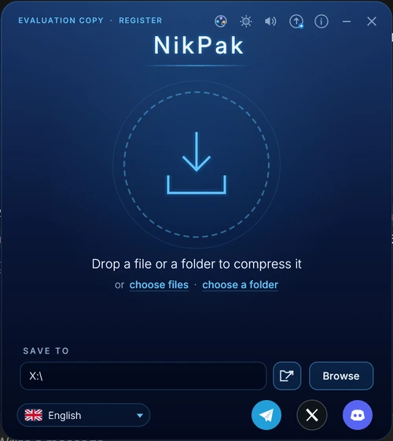
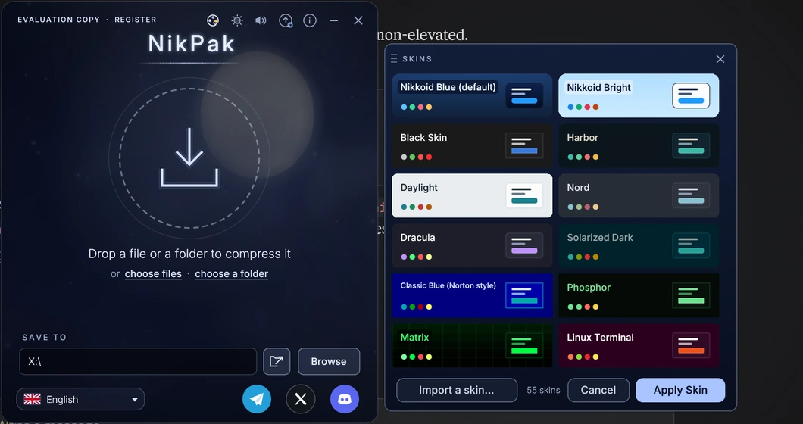
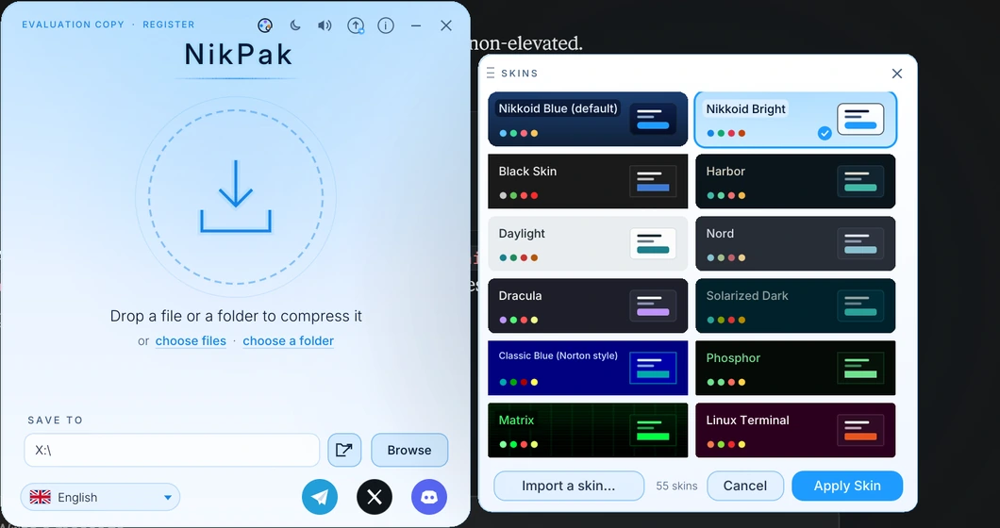
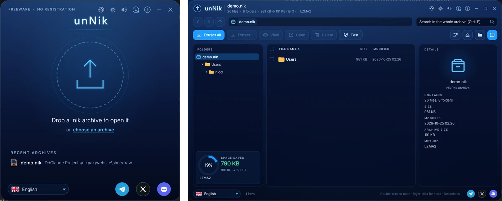
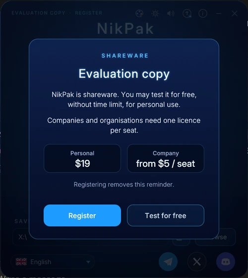

User guide
Install NikPak, compress with a drop, browse archives with unNik, register, and drive everything from the command line.
Install
Run the setup. By default it installs for the current user only, without administrator rights, into %LOCALAPPDATA%\Programs\NikPak; its first page also offers to install for all users. It installs NikPak and unNik, adds them to the Start menu, puts NikPak on the desktop and makes unNik the program for .nik files. On request it adds the folder to the PATH for the command line.
Updates install over the previous version and keep your licence.
macOS and Linux: unpack the archive and run ./install.sh. It copies nikpak and unNik to ~/.local/bin (Linux) or /usr/local/bin (macOS) and adds the right-click menu of the file manager (Dolphin, Nemo, Nautilus; Quick Actions in the Finder). Then start the window with nikpak.
Compress with the NikPak window
- Start NikPak. Drop files or folders on the window, or click the circle and choose Choose files or Choose a folder.
- They are compressed with the best compression (-m5) into one archive named after the file, the folder, or the folder they came from. An existing archive is never overwritten: report.nik becomes report (2).nik.
- The ring shows the percentage, the phase (analysing, compressing, finishing), the amount processed and the time. Cancel or Esc stops at once and removes the unfinished archive.
- When the ring turns green: Show in folder, Open in unNik, or Compress more.


Also in the window
- Save to: the destination folder at the bottom. It is remembered; the first time it is the Desktop. The folder button next to it opens it.
- Switch to unNik: the round button left of the i button closes NikPak and opens unNik, with the new archive if you just made one.
- Language: the button at the bottom left. NikPak and unNik restart in the chosen language and share it.
- Sounds: the speaker button in the title bar switches the sound effects on and off.
- Skins: the palette button in the title bar opens the skins menu beside the window (click a skin to try it, Apply Skin to keep it, Cancel to go back); the sun / moon button switches between dark and bright. The choice is remembered and shared with unNik. All the skins.
- Status and About: the top left shows EVALUATION COPY · REGISTER or the licence holder; the i button shows the version and the licence.
- Drop an archive to extract it: a .nik dropped on the window — or any volume of a split set, or a self-extracting .exe — opens the Extract box (name, size, volumes, password, destination) instead of compressing it.
Skins
NikPak and unNik share 89 skins. The menu opens beside the program, so you can see the whole interface in the skin you are trying.
- Click the palette button in the title bar. The window widens and the skins box appears on the right, outside the program.
- Click a skin: the whole window takes its colours and its background at once.
- Drag the box by its title bar if you want it elsewhere, or to compare it with the interface behind.
- Click Apply Skin to keep it, or Cancel (Esc, or the ×) to go back to the skin you had.


Browse and extract with unNik
Double-click a .nik file, drop it on the unNik window or pick one of the recent archives. Encrypted archives ask for their password first. The window grows into a browser with the folder tree, the files and the details of the selected file.

- Navigate with the folder tree, the breadcrumbs, Back, Forward and Up, and double-clicks. Search finds files by name in the whole archive.
- Select with a click, Ctrl+click, Shift+click or the check boxes. Click a column title to sort. A right-click opens a menu with every action.
- Extract all or the selection: choose the destination, keep the folders or not, and what to do when a file exists: replace it, keep both or skip it.
- View text with line numbers and search, or binary files in hexadecimal. Open starts a file with its own program.
- Delete removes files from the archive after a confirmation; the archive is written again safely. Test checks every file.
Keyboard shortcuts
| Keys | Action |
|---|---|
| Ctrl + F | Search the whole archive |
| Ctrl + E | Extract the selection (everything when nothing is selected) |
| F3 | View the file |
| Del | Delete from the archive |
| Ctrl + A | Select all |
| Alt + Left / Alt + Right | Back / Forward |
| Backspace | Up one folder |
Terms and cover
An archive can carry a legal statement (terms of use, a licence, a copyright notice) and a cover picture. Both are shown before anything else, without the password.
- In the NikPak window, § Legal beside Fast / Medium / Best opens a box to write the terms; ▣ Cover opens one for the picture — click the frame to choose it, or drop it on the window. Any picture is cropped square and stored at 1024 × 1024. The pills stay lit while they apply to new archives.
- On the command line:
-legal terms.txtand-cover art.pngwhen creating;-acceptaccepts the terms in scripts. - unNik shows the cover and the terms first: nothing is listed or extracted until you click I approve. The cover also sits in the title bar — click it to see it large.
- Nikkomander does the same when it opens or unpacks the archive, and shows the cover in Quick view (Ctrl+Q).
Register your licence
- Buy a licence. You receive a key that starts with
NPK1-by e-mail. - In NikPak, click EVALUATION COPY · REGISTER at the top left, or Register in the reminder.
- Enter the name and the e-mail address exactly as on your licence, and paste the key. Case, extra spaces and the look-alike characters O/0 and I/L/1 do not matter.


Once registered, NikPak never asks again on that computer. A company can instead put a nikpak.key file next to nikpak.exe, which registers every user of that PC. From the command line:
nikpak register "Jane Doe" jane@example.com NPK1-... nikpak license nikpak unregister
Command line
NikPak follows the syntax RAR users know: nikpak <command> [options] <archive> [files...]. Options may come before or after the archive name; -- ends the options.
Commands
| Command | Meaning |
|---|---|
a | Create an archive. .nik is added when the name has no extension. Folders are always included with their contents. |
x | Extract with full paths: everything, or only the names, folders and wildcards given. |
e | Extract without paths: every file goes straight into the destination folder. |
l | List the contents: attributes, size, date, name and totals. |
v | Verbose list: adds the CRC32 of every file. |
lb | Bare list: one name per line, for scripts and front-ends. |
t | Test: decompress everything and check every CRC32 and, when encrypted, the authentication. |
p | Print files to the standard output. |
d | Delete files or folders from an archive. Encrypted archives keep their password. |
mt | Media test: shows the size each media filter achieves. Writes nothing. |
register | Register a licence: nikpak register "Name" e-mail key. Also license and unregister. |
Main options
| RAR style | zip style | Meaning |
|---|---|---|
-p | -e | Encrypt or decrypt and ask for the password. An empty entry generates a random password. |
-p<password> | -P <password> | Password on the command line (visible to other users of the machine). |
-hp[password] | | Same as -p; file names are always encrypted in NikPak. |
-r | | Recurse into folders (always on; accepted for compatibility). |
-m0 … -m5 | -0 … -9 | Compression level: store, fastest, fast, good, high, maximum (default). |
-mt<N> | | Number of threads, 1 to 256 (default: all cores). |
-mc- / -mc+ | | All content filters off / media filters always on. Default: automatic trial per file. |
-ep | -j | Store only the file name, without its path. |
-ep1 | | Do not store the name of the base folder. |
-o+ | -o | Overwrite existing files without asking. |
-o- | -n | Skip existing files without asking. |
-or | | Rename extracted files that already exist: name (1).ext. |
-y | | Answer Yes to every question. |
-x<pattern> | -x <pattern> | Exclude files; may be repeated. |
-d <dir> | -d <dir> | Destination folder for x and e. |
-legal <file> | | Attach the legal statement in a text file to the new archive; it must be accepted before the archive is opened. |
-cover <file> | | Attach a cover picture to the new archive (cropped square, stored at 1024 × 1024). |
-v<size> | | Split the archive into volumes of the given size: 700m, 4.7g, 1024k or bytes. Registered copies only. |
-sfx | | Write a self-extracting .exe: unNik with the archive appended. Registered copies only. |
-accept | | Accept the archive's legal statement without asking (scripts). |
-inul -idq | -q | Quiet: only errors are printed. |
@listfile | | Read file names from a text file, one per line. |
-h -help -? | | Full help. -V prints the version. |
Examples
nikpak a backup.nik C:\Docs\*.txt Photos\ # create an archive nikpak a -m5 -mt8 big.nik Projects\ # maximum level, 8 threads nikpak a -v700m -mt8 video.nik Movies\ # volumes of 700 MB: video.nik, video.n01, … nikpak a -sfx -p setup.nik Installer\ # a self-extracting setup.exe, encrypted nikpak a -p secret.nik Taxes2026\ # encrypted, asks for the password nikpak x backup.nik C:\Restore\ # extract with paths nikpak e backup.nik *.jpg C:\Pics\ # only *.jpg, without paths nikpak x backup.nik Docs/report.pdf # extract one file nikpak l backup.nik *.pdf # list only the PDFs nikpak t secret.nik # test (asks for the password) nikpak d backup.nik Temp *.bak # delete entries nikpak mt song.wav tracker.mod photo.bmp # which media filter wins? nikpak a -cover art.png -legal terms.txt pack.nik Bank\ # with a cover and terms to accept
Passwords
When an archive is created with -p, NikPak takes the password from, in this order:
-p<password>or-P <password>on the command line (at least 8 characters);- the environment variable
NIKPAK_PASSWORD, which keeps it out of the process list; - an interactive prompt, asked twice; an empty entry generates a random password;
- without a terminal, a password piped on the standard input, else a generated one.
Exit codes
| Code | Meaning | Typical cause |
|---|---|---|
| 0 | Success | |
| 1 | Warning | Some files were skipped (unreadable, unsafe path, symbolic link) |
| 2 | Fatal error | Cannot create or read a file |
| 3 | Corrupt archive or CRC error | Damaged or truncated archive |
| 7 | Command-line error | Unknown option, missing archive name |
| 10 | Nothing matched | No file matched the names or wildcards |
| 11 | Wrong or missing password | Bad password, or a tampered encrypted archive |
| 12 | Terms not accepted | The archive's legal statement was refused |
Total Commander and other front-ends
Because NikPak accepts RAR's command syntax, a program that can drive an external rar.exe can drive nikpak.exe. In Total Commander, register the extension nik as an additional packer and point the packer and unpacker commands to nikpak.exe. Use -o+ or -y for unattended extraction. Options that RAR front-ends often send (-s, -ma5, -md64m, -ibck, -rr and similar) are accepted and ignored.
-d "C:\My Folder" instead.Going further
The complete technical guide — architecture, the .nik format, the NAC codec, the encryption design and the full benchmarks — is on this page. Questions? Write to us.